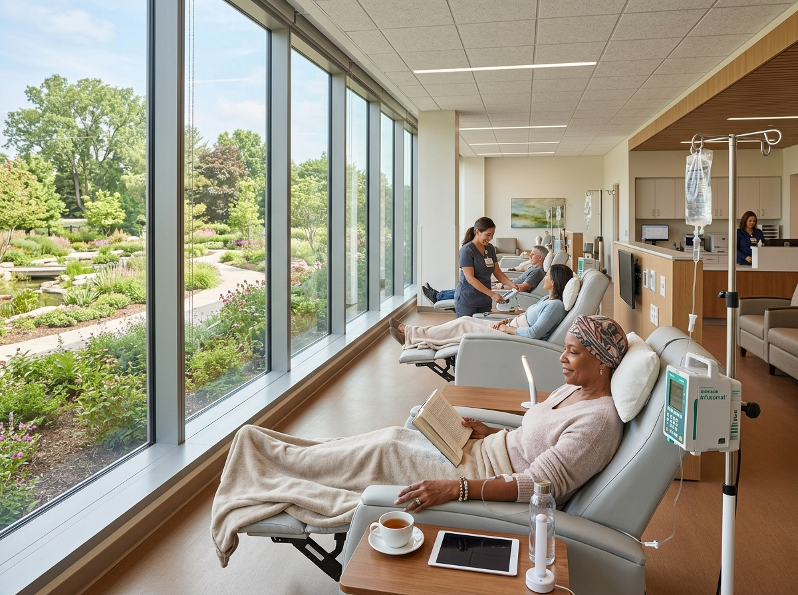
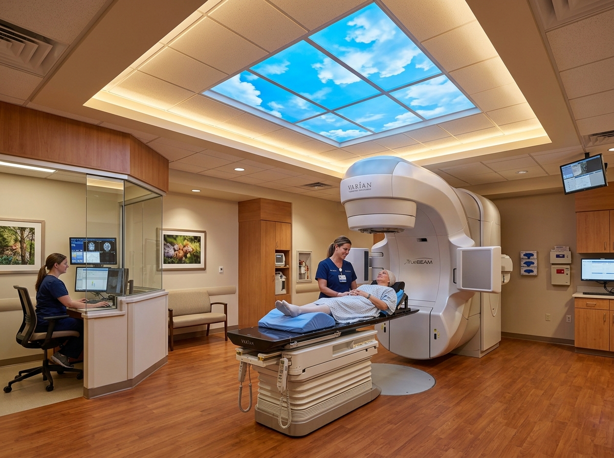
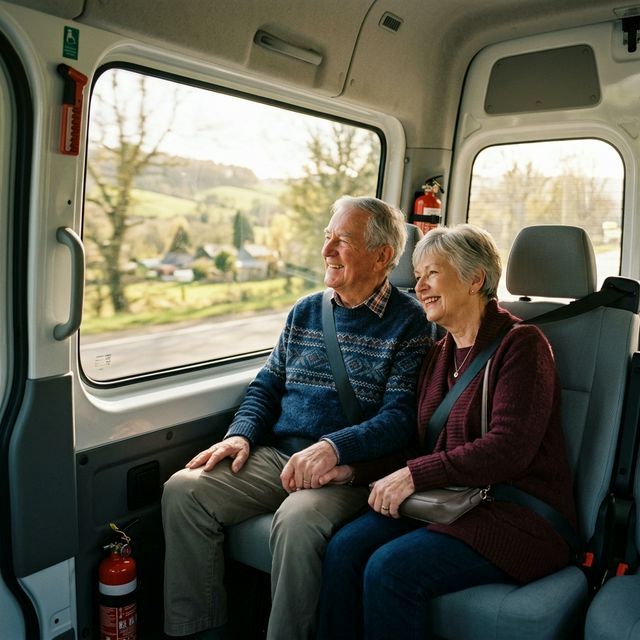
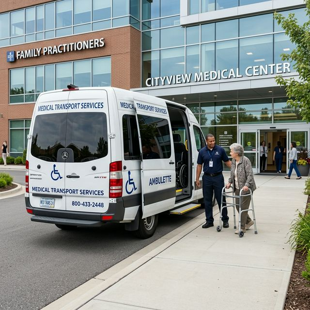
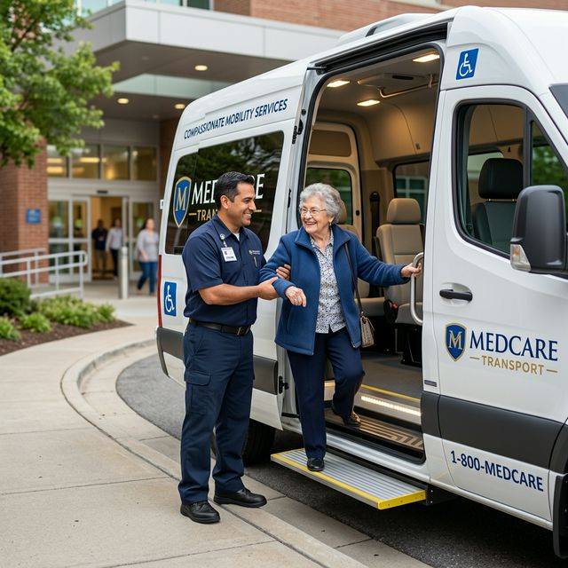

From advanced chemotherapy infusion and precision radiation coordination to lifelong survivorship support, our multidisciplinary cancer center stands with you every step of the way.
Select the pathway tailored to your immediate diagnostic stage, treatment goals, or supportive oncology needs.
Fast-track 48-hour consultation, diagnostic imaging coordination, baseline staging, and collaborative tumor board review.
Book ConsultationComprehensive independent pathology re-evaluation, biomarker review, and alternative treatment comparison.
EnquireTransfer ongoing chemotherapy or biologics to our heated infusion suites with scalp cooling and dedicated OCN nursing.
Book AppointmentDirect 24/7 clinical hotline for fever management, acute nausea relief, psycho-oncology, and dietitian support.
EnquireOur light-filled chemotherapy infusion suites are thoughtfully designed to maximize your physical comfort and emotional calm. Equipped with heated ergonomic recliners, personal entertainment tablets, and panoramic garden views, each session is administered by Oncology Certified Nurses (OCN) with dedicated physician oversight.

We provide seamless coordination with premier regional radiation oncology facilities, ensuring flawless alignment between medical oncology and radiation therapies. Our radiation coordinators guide you through 4D CT simulations, treatment mapping, and daily session logistics with minimal disruption.

Completing active treatment is a major milestone, yet the physical and emotional transition into survivorship brings unique needs. Our Survivorship Care Program provides personalized follow-up care plans, health surveillance schedules, and rehabilitative therapy to help you thrive beyond cancer.

By analyzing the molecular DNA and RNA blueprint of your tumor, we deploy state-of-the-art immunotherapies and targeted biologics that train your immune system to detect and eradicate cancer cells with minimal impact on healthy tissues.

Palliative oncology focuses on relieving symptoms, pain, and stress at any stage of illness alongside curative therapies. Our multidisciplinary care team addresses neuropathy, sleep disruption, anxiety, and fatigue through both medical management and holistic evidence-based modalities.

Whether you need a rapid first consultation, an expert second opinion, or want to transfer your infusions to our comfortable center, our oncology navigators are ready to support you.